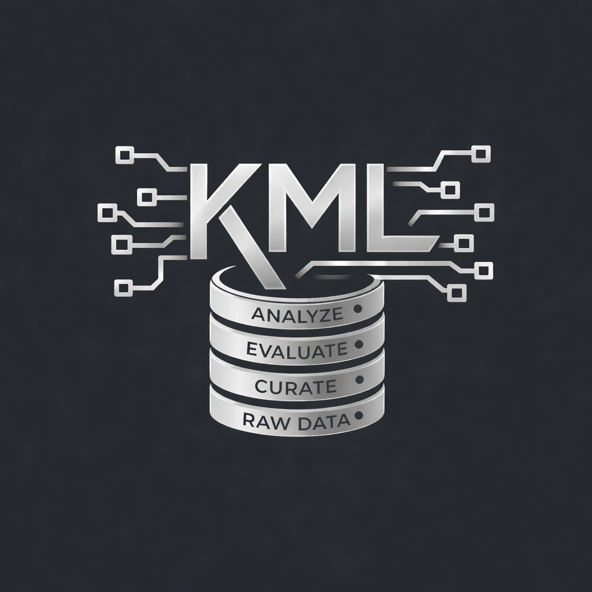

Building Scalable Data & Analytics Infrastructure.
Designing robust internal tooling and high-performance data systems for quantitative research and financial analysis.

Menu Highlights

Margherita Pizza
Tomato, mozzarella, basil

Fettuccine Alfredo
Creamy parmesan sauce

Chicken Parmigiana
Crispy chicken, marinara, mozzarella